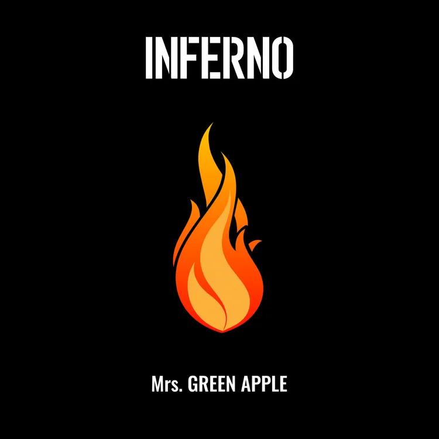

| インフェルノ | サムライ ハート | 銃の部品 |

사진을 누르면 이동합니다.
照らすは熄み
僕らの歩き慣れていた道はどこだ
時はたまに癪だが
温もりに包まれ只
炎が立つ
導の方へ
思い出すは優しいメロディー
빛남이란 건 한숨
우리들이 걸어오는 것에 익숙해진 길은 어디인가
가끔씩 짜증이 날 때도 있지만
따뜻함에 감싸져서 그저
불길이 치솟는
표지판이 가리키는 쪽으로
머릿속에 떠오르는 건 부드러운 멜로디
날뛰는 심장만큼 빠른 노래!
불꽃 같은 노래를 함께 즐겨보아요.
人込みに 紛れて ひとり 空しくって 見上る 空
届かない 会話 キャッチボール 孤獨は 摩してく
HEY HEY 応えて 誰か いませんか?
ずっと 探しても 答えないや
HEY HEY 僕だけが 僕を 作るから
泣たって 笑って 憎んだって 愛して 生きていこう
HEY HEY サムライ ハート
인파에 휩쓸려 혼자 멍하니 올려다 본 하늘
닿지 않는 대화 캐치볼 고독은 커져만 가
HEY HEY 대답해줘 아무도 없나요?
계속 찾아봐도 대답은 나오지 않아
HEY HEY 나만이 나를 만들 수 있으니까
울어도 웃고 미워해도 사랑하며 살아가자
HEY HEY 사무라이 하트
사무라이의 열정이 가득!느껴지는 노래
미워해도 사랑하며 살아보아요
足してくっつけて割って引っ張って
なんか滑稽でもう耐えられない
何がホントで何が嘘で
正しくて最低で美しくなくて
行き詰まって選べなくなって
始まったぜ悴んだ手雁字搦め
↑ま、肩の力抜けって^^;
더하고 들러붙고 가르고 끌어당겨서
뭔가 우스워서 이젠 버틸 수 없어
무엇이 진짜고 무엇이 거짓인지
올바름이란 최악에다가 아름답지도 않아서
막다른 길에서 선택할 것도 없어져서
시작됐어, 수척해진 손을 얽어매고
↑이봐, 어깨에 힘 빼라니까^^;
조급해보이는 가사에 껴있는 잠시 열을 식혀주는 한마디
신나는 비트로 분노를 잠시 잊어봐요!